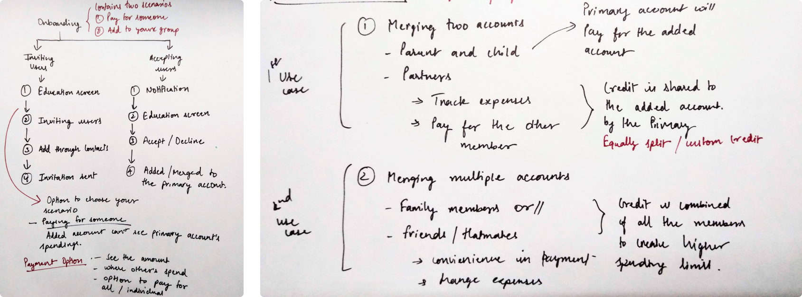

Backstory
This summer I worked as a product design intern at Simpl in Bangalore, India. Simpl is an additional credit wallet, which lets people make online purchases on apps with one click and pay later.
What is Simpl Credit Sharing?
A single bill experience for family members
It is a group where our users will get one consolidated bill of all the members in that group with the option to see where and how much other member's spend on and eventually pay for them also.
Starting up
The reason Simpl wanted to work on this feature was because they received multiple feedback from users who asked in which way they can merge 2 or more accounts. Either of their partners, family members or even their friends. Since the value proposition of Simpl is one bill - they had to build such feature. And luckily, they gave me this entire project to design completely from scratch.
When I started to learn more on this, searching for some design references, I didn't found many companies who have built some financial sharing products. In other words, there wasn't much reference out there that I could look and take inspiration from.
I had to totally rely on my first hand researching to envision how this product will work like.
Research
Starting the project based on some simple product goals, I had some basic questions on my mind like - What are the some use cases? Who will be the target users? What do we know about them? And how the product flow should work like? So I discussed and brainstormed the basic UX with the design head and subsequently moved on to creating the user task flows.
"Our goal was to give a simpler and seamless experience to family members and partners who use Simpl by adding up all of their expenses and creating a total consolidated bill with other useful features"
After a few iterations, I got in touch with the PM and following a few discussions about the possible user scenarios and how we could make the user flows simpler, which helped us put our ideas into perspective, we ended up with a simple solution.
Initial sketches
Product Working
To deliver this seamless experience, I started to flesh out the basic working of this feature, to get clarity about how users will merge their accounts with other users.
So the basic concept I came up with had 3 major user flows -
-
First ― Creating the group and inviting other Simpl users.
-
Second ― Accepting the invitation by the invited user.
-
Third ― Payment experience.
To visualize how this will work in practice, I created the user flows -
Invite and onboarding userflows
User Personas
After making the user flows, I figured out the core scenarios of how this feature will be used. Finally we ended up with 2 major scenarios -
Scenario 1 : Paying for someone else - Parent and the child case
Let's assume a parent, Aditi. She uses Simpl every time when paying on apps for ordering groceries, foods etc. Her son, Ayush also spends a lot on mobile apps like ordering tasty foods or booking a movie ticket.
The problem is every time Ayush makes a transaction, her mom has to pay for him either with cash or with her debit / credit card. This is an unnecessary friction.
To solve this, Aditi invites her son to Simpl and adds his account with hers. In this way she can pay for herself and her son in one go and also can keep a better tab of her son's spendings.
Scenario 2 : Adding others to your account and generating a single bill for all
We know trust-driven groups like families and partners want to have more transparency over their financial decisions. Thus, we wanted to give our users the ability to merge multiple accounts into a group which will help them have more clarity about their spendings.
Below I have listed down what benefits our users will get.
Product Principles
I listed down some principles which defined this feature and halped me make better design decisions. As follows:
-
1. Create a seamless experience for the users to invite other members.
-
2. Ensure clear and straight forward communication about this feature.
-
3. Make it easy for users to use this feature.
Wireframes
From the storyboards I created, I got the list of screens which will cover both scenarios. Then to detail out the flows, I started to create grayscale wireframes.
1. Choose your scenario
Choose from both scenario
2. Invite System - How to invite other members?
Invite users through your contacts
3. Bill Payment - How to pay the bill?
Payment experience
4. Accept Invitation
Invitation screen.
Final Product
1. Onboarding
Educating the user through onboarding screens
2. Choose scenario
Choosing your scenario
3. Invite members
Select members through your contacts
4. Single bill - Pay total
Pay for everyone
Challenges and Insights
- Clear communication
Since this was a completely new feature, it was very important for me to communicate its value proposition to our users in a simple and user-friendly manner throughout all the flows - Onboarding, inviting, accepting, bill payment etc. I spent a fair amount of time on correcting the copy until it made sense based on the concerns I thought our users might have while using it.
- Empathizing with the users
This one was hard and took time. At first the product flow made sense to me because I designed it. But my design head always encouraged me to think from the user's perspective while designing every element of the product and making sure all the user tasks connect seamlessly.
"Empathetic design approach helps in providing deeper insights into designing products."
At the end, I became more unbiased in making design decisions and got open to creating more extensive user personas.
Thanks for reading! Reach out to me on Twitter